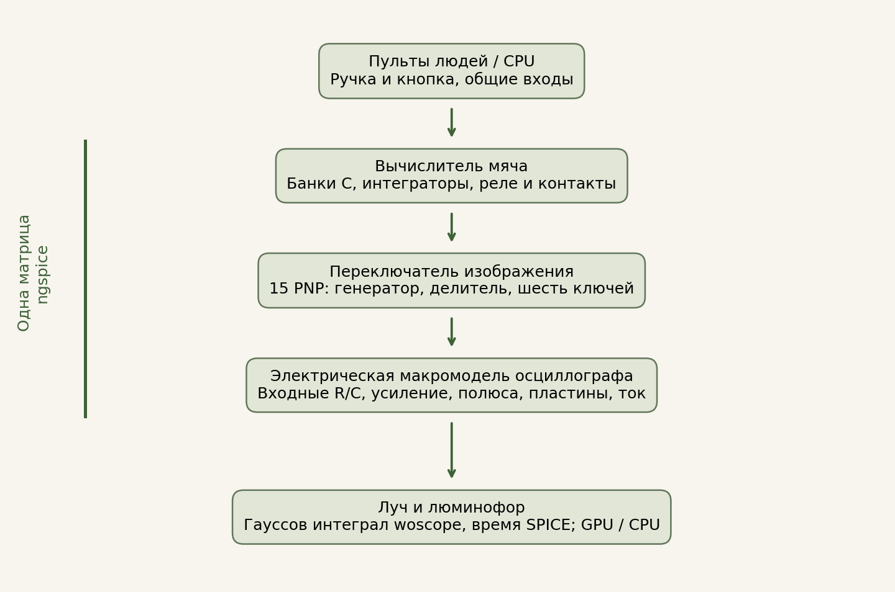
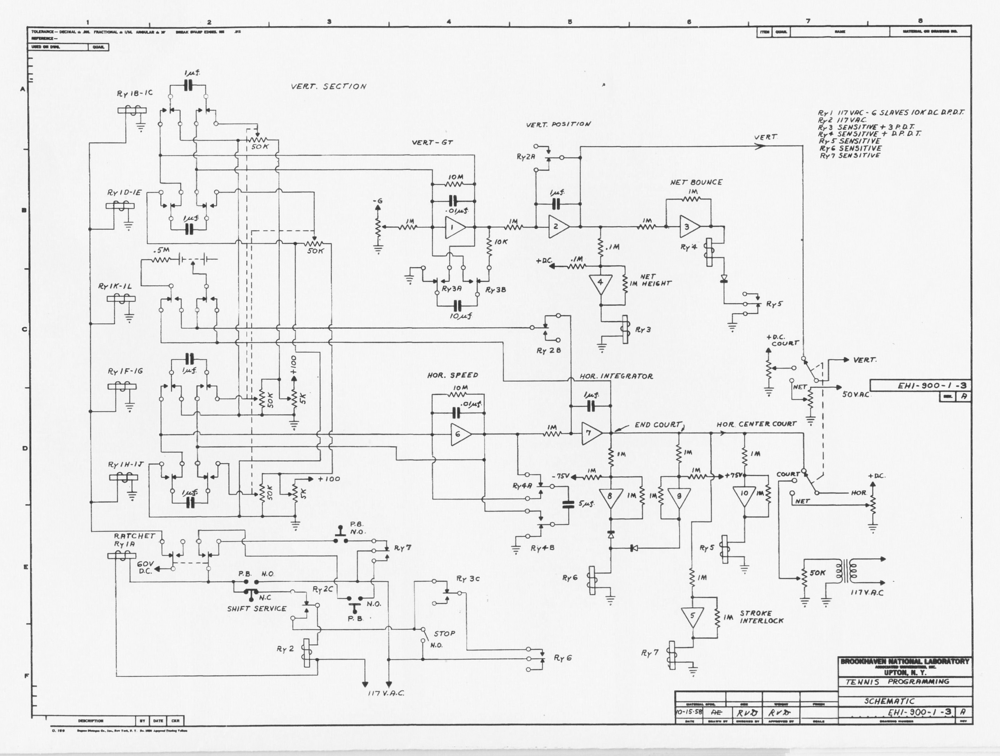
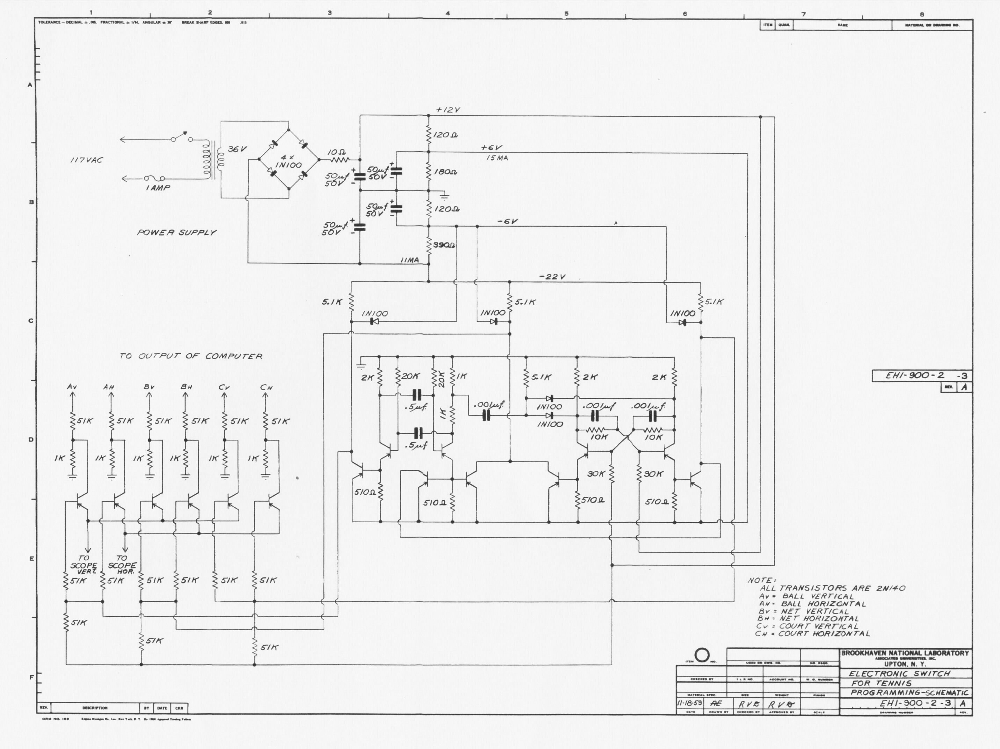
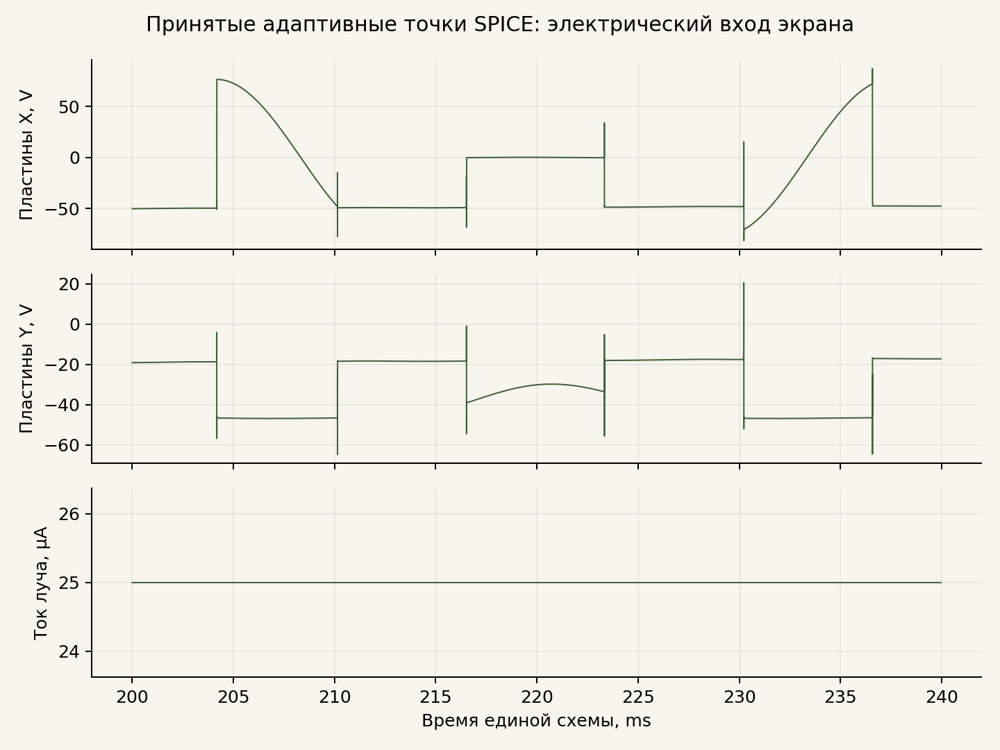
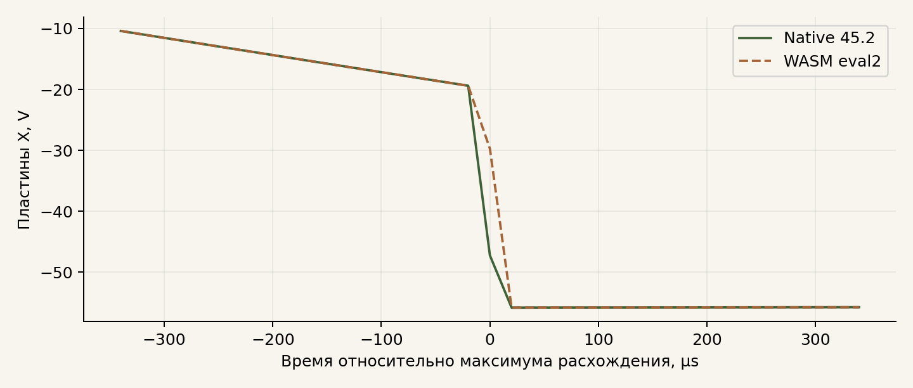
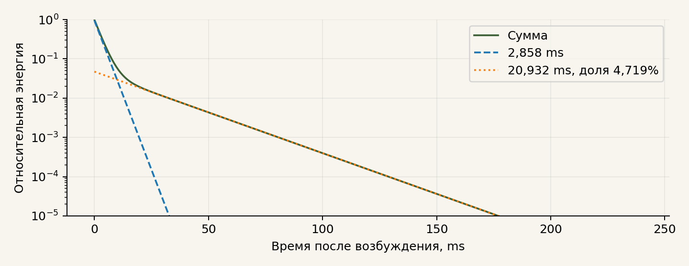

Исследование и инженерный отчёт. Версия 0.8.4, 25 октября 2026 года.
Автор проекта: Дмитрий Малыхин, Гремлин. Разработка и исследование ведутся в диалоге с ChatGPT (OpenAI). Авторство внешних разработок перечислено в реестре происхождения; наш код и поясняющие тексты выпускаются под MIT.
1. Что является результатом
Работающий браузерный прибор соединяет вычислитель мяча, транзисторный переключатель и электрическую макромодель осциллографа в одном переходном анализе ngspice/WASM. Физическое время общее для всех элементов. Положение мяча, отскоки и межблокировки определяются электрической моделью. Экран получает трассу отклоняющих напряжений и тока луча.
Это схемная реконструкция по сохранившейся документации с открыто заданными эквивалентами. Критерии завершения — документированные соединения, обоснованные замены и проверенный расчёт. Отсутствие утраченного оригинала не мешает завершить такую реконструкцию.
| Основание | Что подтверждает |
|---|---|
| Исторические источники | Свидетельства, архивные листы, документация изготовителей |
| Электрическая модель | Реализованные соединения, выбранные эквиваленты и явные параметры |
| Численные проверки | Сходимость, сравнение решателей, сохранение состояния и повторяемость |
Численные расхождения относятся к выбранной модели и проверенным сценариям. Источники параметров и принятые замены перечислены отдельно.
Дополнительный режим «Демо» воспроизводит запись схемы, игроков и пультов без потерь с темпом 1,00×. Опубликованный опорный цикл длится 15,166674 секунды; длительность каждой записи указана в её манифесте. Экран и стекло рассчитываются в браузере. Демо выключено по умолчанию; три игровых режима сохраняют живой электрический расчёт. Запись и проверки времени описаны в приложении о демо.
2. Исторические основания
Tennis for Two показали посетителям Брукхейвена 18 октября 1958 года. Хигинботам и Дворак использовали аналоговый вычислитель, два ручных пульта и осциллограф. Свечение показывало поле сбоку, сетку и мяч. Поворот ручки менял направление удара, кнопка выполняла удар из текущего положения. Основание: архив BNL [H1].
Опубликованный лист вычислителя EH1-900-1-3 A датирован 15.10.1958 [H2]. Лист переключателя EH1-900-2-3 A датирован 18.11.1959 [H3]. Объединение этих листов означает реконструкцию документированного принципа прибора; оно не устанавливает точный состав демонстрации октября 1958 года.
В статье The Strong Raiford Guins описывает исправления, сделанные при сборке исходного аппарата, которые не внесли в сохранившийся чертёж [H7]. Поэтому обнаруженное противоречие разрешается открытой записью решения, а буквальная транскрипция листа сама по себе не служит проверкой результата.
Питер Такач и аппаратные реконструкции
В 1997 году команда Такача воссоздала игру к юбилею лаборатории. Материалы BNL о показе 2008 года называют Peter Takacs, Gene Von Achen, Paul O’Connor и Scott Coburn. Использовали механические реле и германиевые транзисторы; вычислитель заменили современной аналоговой схемой [H4].
В авторском рассказе 2010 года Такач описал повреждение полупроводников выбросами релейной коммутации и подготовку подключения восстановленного Donner Model 3400 [H5]. Эта работа учитывается как аппаратное основание. Она не содержит полного набора параметров наших макромоделей. Model 3400 также не приравнивается к исходному Donner Model 30.
В объяснении BNL Такач указывает 36 Hz при чередовании изображения [H1]. Сопоставление этого числа с полным циклом нашей трёхканальной схемы — исследовательская интерпретация: пофазных электрических измерений в этой публикации нет.
3. Что дали другие проекты
Современная аналоговая реализация Angel De La Cruz и John Ryan, MIT 6.101, 2016 года показывает практически работающую архитектуру, но использует свои компоненты, генераторы и масштабы напряжений [H6]. Их значения не перенесены в нашу модель под видом номиналов аппарата 1958 года.
MEGA/T42 даёт аппаратное и функциональное сопоставление [H8]. TeTS полезен как независимая программная интерпретация. Его автор прямо описывает выбранный закон сопротивления и графическую модель следа [H9]. Утверждение, что это официальный симулятор BNL с «миллиметровой точностью», найденными первичными материалами не подтверждено.
Для изображения найден готовый алгоритм woscope [S3, S4]. Его аналитическое накопление гауссова пятна используется и адаптируется с сохранением авторов и MIT-лицензии. Архитектура MAME/BGFX [S5] полезна для разделения возбуждения люминофора, затухания, HDR-накопления и вывода. Приоритет «первая такая реконструкция в мире» этим поиском не устанавливается.
4. Вычислитель мяча
Четыре зарядных банка по 1 µF заряжаются через 50 kΩ. Контакты переключают банки в обратную связь усилителей скорости. Цепи 1 MΩ / 1 µF интегрируют выходы. В обратной связи находятся ветви 10 MΩ параллельно 0,01 µF. Напряжение U7 представляет X, U2 задаёт вертикальное положение относительно верха сетки.
Удерживающие конденсаторы 10 µF и 5 µF перекоммутируются при столкновении с землёй и сеткой. Отскок получается из изменения соединений и перераспределения заряда. В игровом JavaScript отсутствует интегратор снаряда или отдельный множитель восстановления скорости.
Объявленные эквиваленты
Усилитель описан конечным усилением, доминирующим полюсом, ограничением питания и выходным сопротивлением. Реле имеет R–L-катушку, выпрямительный и защитный путь, пороги с гистерезисом и RC-эквивалент движения якоря. Контакты имеют конечную проводимость и плавное переключение. Память блокировок реализована электрическими состояниями и поведенческими источниками. Эти модели не выдаются за полную внутреннюю схему Donner.
| Параметр | Рабочая настройка | Статус |
|---|---|---|
| Интегрирующая цепь | 1 MΩ / 1 µF | Основание в архивном листе |
| Заряд банка | 50 kΩ / 1 µF | Основание в архивном листе |
| Удержание земли / сетки | 10 µF / 5 µF | Основание в архивном листе |
| Напряжение −G | −60 V | Наша настройка реконструкции |
| Высота сетки / границы X | 20 V / ±75 V | Выбранный масштаб |
| Подача | X = ±62 V | Наша калибровка |
| Усилитель | A0 = 10000, полюс 1 Hz, выход 100 Ω | Макромодель |
| Катушка | 10 kΩ, 10 H, порог 50 µA | Инженерный эквивалент |
| Контакт | около 50 Ω во включённом состоянии | Инженерный эквивалент |
Полные параметры, законы управления и журнал C01–C07 находятся в model.json, corrections.json и tennis.cir. Netlist является исполняемым описанием; JSON служит его индексом.
5. Транзисторный переключатель
Переключатель содержит 15 PNP: два транзистора генератора, два бистабильного делителя, пять драйверов и шесть аналоговых ключей. Он сам выбирает каналы мяча, сетки и земли. В генераторе нет внешнего программного расписания фаз.
Два резистора по 1 kΩ образуют нагрузку со съёмом дифференцированного импульса. В схеме присутствуют 20 kΩ, 0,5 µF, 510 Ω, 10 kΩ параллельно 1 nF и входные делители 51 kΩ / 1 kΩ. Подробная топология дана в display-switch.cir и display-model.json.
Рабочая модель Ge PNP содержит BF = 75 и дополнительные параметры утечек, обратного усиления, сопротивлений, ёмкостей и времени переноса. Справочник RCA SC-11 даёт основание для типа 2N140 и одной малосигнальной рабочей точки [H10]. Он не определяет все параметры переключательной модели. Обратные режимы и пробой пока не идентифицированы.
В отдельном стенде получается около 39,09 Hz полного цикла при объявленных параметрах. Исторический ориентир 36 Hz приведён как сопоставление, а не использован для скрытой подгонки ёмкостей.
В игровом тракте питание рассчитывается вместе с нагрузкой: трансформатор, мост, делитель и четыре фильтрующих конденсатора. Сетка и корт имеют отдельные AC-ветви с конечным сопротивлением потенциометров. Фаза сети сохраняется при продолжении расчёта. Трансформаторные параметры, смещения и положения регуляторов перечислены как выбранная калибровка.
6. Один переходный анализ
Выходы вычислителя U2/U7 непосредственно подключены к ключам; их нагрузка влияет на общий электрический расчёт. После переключателя находятся входы осциллографа. Вычислитель, переключатель и осциллограф решаются одной матрицей ngspice и используют одно время. Экран получает след луча.
Отдельный диагностический стенд исследует переключатель при фиксированном положении мяча. Он позволяет измерить частоту, передачу и разделение каналов. В игровом тракте мяч движется непрерывно, а входы переключателя изменяются вместе с вычислителем.
Верхняя граница внутреннего шага — 50 µs, метод Gear второго порядка, reltol = 10⁻⁴, abstol = 10⁻⁹ A, vntol = 10⁻⁶ V. Это выбранный совместный профиль. Состояние пультов получается каждые 5 ms модельного времени. Трасса луча содержит реальные принятые адаптивные точки.
Выгрузка точек и память
В проверке плотного вывода обнаружено искажение при использовании interp в возобновляемом сеансе ngspice 45.2. У игрового объединённого сеанса этот режим отключён с загрузки. Для изображения сохраняются принятые точки с их временем. Послеаналитическая линейная интерполяция используется только в отдельно обозначенных сравнительных стендах.
Ограничение истории выполняется переносом напряжений узлов и токов катушек в следующий участок. Для устойчивого старта сохраняются также алгебраические приближения узлов усилителей. История Gear при этом перезапускается; погрешность границы проверяется сравнением с анализом без переносов. Фаза синусоидальных входов учитывает общий временной сдвиг.
Длительный тест выявил рост выделенной WASM-памяти при повторных загрузках. В версии 0.8.4 свежий Worker сначала проверяет восстановление электрического состояния. Только после успеха завершается прежний Worker. Перенос запрашивается на безопасной границе каждые полсекунды или при достижении порога кучи. Отказ начальной точки сохраняет исходный расчёт; следующая попытка откладывается на 50 ms времени схемы. Опубликованный сбой и новые проверки описаны в приложении о продолжении. Активный импульс кнопки завершается до переноса; ожидающая команда применяется после восстановления. Повторного начального установления нет.
7. Электрическая модель осциллографа
Основа для масштаба — опубликованные DuMont характеристики семейства 5ADP и 304-A [D1, D2]. Трубка использует электростатическое отклонение. Ток отклоняющих катушек в модель этой трубки не вводится.
| Величина | Значение | Основание |
|---|---|---|
| Вход X | 2,2 MΩ параллельно 50 pF | Номинальная спецификация 304-A |
| Вход Y | 2 MΩ параллельно 50 pF | Номинальная спецификация 304-A |
| Опора ускоряющего напряжения | 1,6 kV | Выбранная рабочая опора для масштаба |
| Чувствительность X / Y | 48 / 36,8 V на дюйм | Масштаб семейства 5ADP при этой опоре |
| Полоса макромодели | Два полюса по 300 kHz | Наша реализация опубликованного ограничения АЧХ |
| Усиление X / Y | 54 / 44 | Наша настройка масштаба |
| Смещение и предел пластин | Явно заданы, ±110 V | Наша калибровка |
| Ток луча | Номинально 25 µA | Выбранная настройка, не измерение оригинала |
Два последовательных полюса дают модуль 0,9 на 100 kHz и 0,5 на 300 kHz. Входные R/C нагружают переключатель в общей схеме. Эта модель позволяет исследовать электрический тракт; ламповые каскады, высоковольтный источник, нагрев катода и старение трубки пока не перенесены поэлементно.
8. Луч и люминофор
Следующий слой получает только время, напряжения пластин X/Y и ток луча. Он не знает, какая часть сигнала соответствует мячу, сетке или земле. Надписи, пауза, прицел и состояние расчёта выводятся внешней панелью.
Алгоритм woscope интегрирует гауссово пятно вдоль малого участка движения. Чем дольше луч находится над областью, тем больше энергии она получает. В нашей адаптации используется нормированное двумерное пятно; заряд участка пропорционален действительному току и длительности интервала. Аппроксимация erf в woscope восходит к опубликованному CC0-коду Evan Wallace [S6]. Эта цепочка происхождения сохранена.
Люминофор описан двумя компонентами линейного накопления и затухания. Для каждой компоненты сохраняется энергия; между возбуждениями она умножается на exp(−Δt/τ). Вывод на монитор выполняется после накопления. Для опоры использована общая характеристика RCA P1 1951 года. Десять графически прочитанных точек аппроксимированы временами 2,858 и 20,932 ms. При допущении линейного стационарного возбуждения им соответствует медленная доля импульсного внесения 4,719%. История возбуждения на архивном графике не установлена; это выбранная интерпретация общего P1, а не измерение конкретной 5ADP1. Ширина пятна, ореол и фотометрический масштаб остаются нашей калибровкой.
В WebGL2 энергия хранится в RGBA32F. Проверяются возможности EXT_color_buffer_float и EXT_float_blend по спецификациям Khronos [S7]. При их отсутствии работает CPU с тем же интегралом и временной шкалой. Меньшее разрешение резервного буфера сокращает стоимость отображения. На паузе повторное предъявление кадра не добавляет энергию. При потере WebGL-контекста CPU восстанавливает свечение по недавней электрической трассе; одна секунда истории покрывает более 47 постоянных медленной компоненты.
9. Операторы CPU
В игре три режима: «Я и Противник», «Я и Лиса», «Гремлин против Лисы». Два автоматических игрока управляют теми же ручками и кнопками, что люди. Они видят запаздывающее положение мяча и лампы разрешения. Скорость оценивается по истории; будущая траектория и мгновенные внутренние скорости решателя в принятие решения не передаются.
Исследования Brenner и коллег дают основания различать задержку коррекции по положению и реакцию на изменение движения [C1, C2]. Работа van Zon и коллег рассматривает длительность поворота регулятора через закон Фиттса [C3]. Firoiu и коллеги исследуют задержку действий игрового агента [C4]. Эти источники обосновывают структуру модели.
Наши коэффициенты: задержка 200–300 ms, ограниченная скорость ручки 0,60 диапазона в секунду, длительность движения с зависимостью от расстояния и точности. Они не являются измерением человека у Tennis for Two. Подробный разбор исследований и переносимых выводов дан в CPU как оператор пульта: основания и реализация. Человеческое игровое сравнение пока не выполнено.
10. Работа над численным ядром
Решатель ngspice заимствован и имеет собственных авторов. Наша работа в 0.5.1 сократила повторные обходы общих подвыражений и лишнюю обвязку Asyncify для известных синхронных функций. В 0.5.2 деревья выражений и производных один раз подготавливаются в последовательность операций. Числовые значения повторно используются только внутри одного вызова IFeval; между итерациями Ньютона и шагами времени они пересчитываются. Выбранные условные ветви сохраняются, состояния и неизвестные функции переходят на прежний вычислитель. План освобождается вместе с деревом.
Из пяти сборок проверялись O2, O3, LTO, подготовленный вычислитель и их сочетание. Выбран O3 с подготовленным вычислителем без LTO. На старом одинаковом совместном стенде 0,4 s модели:
| Среда и условие | Было | 0.5.2 | Снижение времени |
|---|---|---|---|
| Node/WASM, медиана 3 повторов | 6,607 s | 5,319 s | 19,5% |
| Chrome/Linux, отдельный Worker на повтор | 6,528 s | 5,499 s | 15,8% |
Все 69 сигналов старого теста совпали. Пройдены 100401 побитовое сравнение вычислителей и девять SPICE-сценариев. Эти цифры относятся к конкретной модели и окружению, а не к новой игре, FPS или Mac M1. В первом браузерном прогоне нескольких модулей в одном Worker были аномальные времена; они сохранены отдельно. Их причина не установлена.
Генерация готовых функций выражений, SIMD и вычисление электрической схемы на GPU остаются предложениями. Они не включены в этот релиз.
11. Проверки и границы вывода
Проверки охватывают вычислитель, отдельный переключатель, CPU и общий тракт. Для переноса состояния сравниваются напряжения и время фронтов; для экрана — интеграл луча и накопление энергии. У каждого результата указаны условия, исходный критерий и границы вывода.
В проверочном облачном Chrome WebGL2 недоступен. Подтверждён запуск резервного CPU-экрана. GPU-проверки пропущены. На целевом Mac M1 / Firefox замеры этой версии ещё не выполнены.
Численные проверки модели
Числа относятся к выбранным сценариям Linux/Node/WASM и одной электрической модели; это не аппаратная верификация.
| Проверка | Измерение | Область |
|---|---|---|
| Общий тракт | 7 / 7 | Схема, след луча, продолжение расчёта, экран и CPU |
| Перенос координат | 124.081 µV | Контрольная траектория, несколько перезапусков |
| Штатный перенос | 2.667 µs | Максимальный сдвиг фронтов в указанном окне |
| Частые переносы | 1.396 µs | Максимальный сдвиг фронтов в указанном окне |
| Холодный старт: координаты | 0.405 mV | Полное окно 0,4 s, включая установление |
| Холодный старт: одноимённые фронты | 13660.128 µs | Линеаризованная сетка 20 µs; полный отчёт сохраняет исходные максимумы |
| Холодный старт: вне фронтов | 76362.699 mV | Исключены явно заданные окна ±150 µs; это отдельный критерий |
| Холодный старт: максимумы | 76.363 V | Покомпонентный порог 20 mV на переключениях: не пройден |
| Перенос Worker (форсированный) | 0.040 s / — ударов | 8 переносов; пик WASM 83.06 MiB |
| Производственный Worker | 12.002 s / 9 ударов | 24 переносов; пик WASM 119.62 MiB |
| Общее начальное состояние: координаты | 0.208 mV | Native и WASM продолжают одну принятую точку после 0,25 s |
| Общее состояние: фронты / вне фронтов | 19.985 µs / 3.327 mV | Отдельно от холодного старта; исходные максимумы сохраняются |
Границы результата
При холодном запуске делитель может выбрать разный начальный порядок B/C. Одноимённые сигналы в таком случае различаются и вне фронтов: это сохранённый неуспешный критерий сравнения холодного старта. Дополнительный опыт с общей принятой начальной точкой отдельно проверяет численное продолжение одинакового состояния. Все неуспешные опыты сохранены. Начальный строгий профиль 25 µs / 10⁻⁶ увеличил память прямого сеанса и обнаружил ошибку продолжения в новом Worker. Рабочая версия сначала устанавливает принятую начальную точку с прежними входами на микросекундном интервале, затем применяет новую команду пульта. Повторного включения прибора и нового розыгрыша при этом нет. Датированные журналы проверок доступны в исходниках исследования рядом с описанием сценариев.
Серия E1 содержит 40 завершённых переходных случаев, два обрыва по сходимости и один тайм-аут, а также два завершённых AC-опыта. Они описывают исследовательские варианты, не подменяют проверки рабочего прибора.
Скорость Mac M1, Firefox и аппаратный WebGL пока отдельно не измерены. В браузере доступен резервный CPU-рендер. Полные журналы: joint-validation.json, worker-validation.json, joint-phase-validation.json, joint-native-validation.json и joint-native-warm-validation.json.
12. Материалы исследования
Страница игры содержит PDF исследования и архив исходников. Опубликованы исполняемые схемы, параметры, исходники зависимостей, изменения решателя, тесты и журналы. Они позволяют повторить расчёты и проверить заявленные результаты. Методика воспроизведения приложена к исходникам.
Наши тексты и код — MIT. Заимствованные части имеют свои лицензии. Полный реестр происхождения входит в исследование. Авторы исторических схем, ngspice и алгоритма woscope указаны отдельно.
13. Принятые границы реконструкции
Рабочая сборка использует доступные первичные схемы, опубликованные параметры и открыто заданные эквиваленты. Питание и нагруженные источники линий включены в общую симуляцию. Релейные контакты, усилители Donner и ламповый тракт осциллографа имеют явно описанные макромодели.
Схема усилителя не потеряна как класс: руководство Donner Model 3000 1957 года содержит внутреннюю ламповую схему и характеристики. Её точное тождество Model 30 не подтверждено. Такач применял современные ОУ, затем восстанавливал Model 3400. Эти сведения дают основание для инженерного выбора, не требуют выдавать соседнюю модель за идентифицированный оригинал.
Макромодель игрового вычислителя остаётся прежней проверенной. Увеличение полосы и добавление токового ограничения исследовались отдельно; простая подстановка значений нарушала сходимость или продолжение расчёта. Такие варианты сохранены как эксперименты и не подменяют рабочую схему.
Источники исследования
- [H1] BNL, The First Video Game?: https://www.bnl.gov/about/history/firstvideo.php
- [H2] Tennis Programming, 1958: https://www.bnl.gov/about/docs/videogameschematic1.jpg

- [H3] Electronic Switch, 1959: https://www.bnl.gov/about/docs/videogameschematic2.jpg

- [H4] Diane Greenberg, BNL, 03.11.2008: https://www.bnl.gov/newsroom/news.php?a=2964
- [H5] Peter Takacs, 14.12.2010: https://scienceblogs.com/brookhaven/2010/12/14/resurrecting-one-of-the-worlds
- [H6] Angel De La Cruz, John Ryan, MIT 6.101, 2016: https://web.mit.edu/6.101/www/s2016/projects/angeld19_Project_Final_Report.pdf
- [H7] Raiford Guins, The Strong, 13.01.2017: https://www.museumofplay.org/blog/following-the-bouncing-ball-tennis-for-two-at-the-strong/
- [H9] RetroAnalyst, TeTS, 04.08.2021: https://www.retrogamedeconstructionzone.com/2021/08/the-tennis-for-two-simulator-tets.html
- [H10] RCA Transistor Manual SC-11, 1964, p.131: https://manuals.plus/m/db7d541ddf75928e77eb98d8259325b533a3e448761ab34769aa85c3f69a86b6.pdf
- [D1] DuMont Oscillographer, 14(1), 1953: https://www.oscilloscopemuseum.org/uploads/8/9/7/7/89778727/dumont_-_oscillographer_-_vol._14_no._1.pdf
- [D2] DuMont 304-A Operating and Maintenance Manual: https://www.opweb.de/en/manufacturer/dumont-oscilloscope-laboratories-inc/304a
- [S1] ngspice: https://ngspice.sourceforge.io/ ; состав лицензий —
../vendor/COPYING.
- [S2] EElab.dev, EEcircuit-engine: https://github.com/eelab-dev/EEcircuit-engine
- [S3] Igor Null, Chad von Nau, woscope: https://github.com/m1el/woscope
- [S4] Igor Null, How to draw oscilloscope lines with math and WebGL, 17.09.2015: https://m1el.github.io/woscope-how/
- [S5] MAME, BGFX vector CRT renderer: https://docs.mamedev.org/techspecs/bgfx_vector_crt.html
- [S6] Evan Wallace, Fast Rounded Rectangle Shadows, CC0: https://madebyevan.com/shaders/fast-rounded-rectangle-shadows/
- [S7] Khronos: https://registry.khronos.org/webgl/extensions/EXT_color_buffer_float/ ; https://registry.khronos.org/webgl/extensions/EXT_float_blend/
- [C1] Brenner, Smeets, de Lussanet, 1998: https://doi.org/10.1007/s002210050535
- [C2] Brenner, Bom, Smeets, 2026: https://doi.org/10.1007/s00221-026-07264-3
- [C3] van Zon, Borst, Pool, van Paassen, 2019/2020: https://doi.org/10.1177/0018720819862146
- [C4] Firoiu, Ju, Tenenbaum, 2018: https://arxiv.org/abs/1810.07286
Дополнительные первичные документы
- [B3] William Higinbotham, 1976 technical account, BNL archive: https://www.bnl.gov/about/docs/higinbotham_deposition.pdf
- [G1] RCA Semiconductor Products, 1960: https://n4trb.com/AmateurRadio/SemiconductorHistory/RCA_Semiconductor_Products_1960.pdf
- [G2] RCA Transistor Manual SC-12, 1966, printed p. 122: https://ftpmirror.your.org/pub/misc/bitsavers/components/rca/1966_SC-12_RCA_Transistor_Manual.pdf
- [G3] Taitron 1N100 datasheet, modern: https://www.taitroncomponents.com/catalog/Datasheet/1N100.pdf
- [A1] Dana Peckworth, Resolution of complex decay curves by analog computer techniques, 1959, printed pp. 4–5, 37: https://archive.org/download/resolutionofcomp00peck/resolutionofcomp00peck.pdf
- [E1-C1] DuMont 5ADP1 manufacturer data: https://frank.pocnet.net/sheets/041/5/5ADP1.pdf
- [E1-C2] RCA 5ADP1 manufacturer data, curves 92CM-9099, 7910, 6820R1: https://frank.pocnet.net/sheets/049/5/5ADP1.pdf
- [E1-C3] RCA HB-3 Picture Tube Guide, P1 curve 92CM-5380R2, 1951-02-01, PDF p. 31: https://frank.pocnet.net/sheets/049/suppinfo/rca_hb3_pic.pdf
- [A2] Donner Scientific, Operating Handbook Model 3000, October 1957, printed pp. 1–2, 5–7, 25–26, schematic E25: https://www.analogmuseum.org/library/donner_3000.PDF
- [A3] Irvin H. Swift, Computing amplifier, US2581456A, published 1952-01-08: https://patents.google.com/patent/US2581456A/en
Схемы и сигналы












Происхождение, авторы и повторное использование
Версия 0.8.4. Проверка состава: 25 октября 2026 года.
Наш собственный код, схемные описания и поясняющие тексты выпускаются под MIT. Сторонние исходники сохраняют собственные лицензии. MIT нашего проекта не перелицензирует ngspice, документы производителей, архивные чертежи или статьи.
ReportLab (BSD), Matplotlib (PSF-based license), Pillow (HPND) и DejaVu Fonts использованы для PDF и графиков. Это инструменты подготовки, их код не входит в браузерный runtime. Шрифты DejaVu встроены в PDF; уведомление сохранено в DejaVu-Fonts-LICENSE.txt.
Planck.js / Box2D: механика пультов
Planck.js 1.5.0 рассчитывает вращательные и поступательные шарниры пультов. Авторы: Erin Catto, Ali Shakiba; лицензия MIT. Сохранены оригинальные модуль движка, исходный пакет и текст лицензии. Версия, происхождение файлов и SHA-256 перечислены в реестре Planck.js. Историческое сравнение описано в разделе «Механика пультов», проверка альтернатив — в разделе «Выбор движка механики». Rapier, Box2D-WASM и Matter.js изучены по документации; их код в прибор не включён.
Оптика лицевого стекла
Самостоятельная MIT-реализация законов Снеллиуса и Френеля, поглощения и ограниченного внутреннего переотражения. Основания: паспорт DuMont 5ADP; A. E. Martin и R. M. Bowie, Sylvania, Electronics за август 1950; Pharr, Jakob и Humphreys, Physically Based Rendering 4e; Michael Deering US5446834A. Математические и исторические источники указаны с авторами; их программный код не включён. Выбранные параметры стекла и комнаты описаны в Оптика стекла экрана.
Компоненты реконструкции
| Компонент | Назначение |
|---|---|
Вычислитель tennis.cir | Зарядные банки, интеграторы, переключаемые конденсаторы отскока, макромодели реле и усилителей |
display-switch.cir | Сеть 15 PNP: генератор, делитель, драйверы и шесть ключей |
Питание и линии instrument-model.js | Архивная топология пассивного питания, нагруженные регуляторы и объявленная калибровка |
Объединённая схема joint-circuit.js | Непосредственное соединение U2/U7, ключей и электрических входов осциллографа |
| ngspice45.2-tft-eval2 | Численный решатель в WebAssembly; версия, исходники и изменения определены ниже |
SpiceSession, TennisCircuit | Командный сеанс, входы пультов, события и состояние вычислителя |
CPUPlayer | Запаздывающее наблюдение, ограниченный поворот ручки и штатная кнопка |
| Луч и люминофор | Отображение электрической трассы с накоплением и затуханием энергии |
| Численные проверки | Контроль соединённого тракта, отдельных узлов и переноса состояния |
Контрольные точки содержат состояния вычислителя, переключателя и экранного тракта. Фаза входных синусоидальных сигналов учитывает общий временной сдвиг. Изображение строится по электрической трассе луча.
Код и инструменты, вошедшие в продукт
ngspice и его участники
- Источник: https://ngspice.sourceforge.io/
- Используется версия 45.2 и наша кумулятивная правка
ngspice45.2-tft-eval2.patch.
- Это численное ядро, модели устройств, переходный анализ, матрица и решатель.
- Основная лицензия — Modified BSD; отдельные части перечислены в
../vendor/COPYING.
- Полный исходный архив и сведения о сборке опубликованы. Наш MIT относится к нашему коду; права на изменения существующих файлов рассматриваются вместе с их исходной лицензией.
- Текущий WASM: SHA-256
7e92084ce97153e5288919cfcd64a2255dad37a7e5d9abf2d1350f09df667a5c.
EElab.dev / EEcircuit-engine
- Основа интерфейса: npm 1.8.0, commit
f4dab6458d3865a1db9766008480690d23410c3a.
- Лицензия оболочки — MIT, Copyright 2024 EElab.dev.
- Использованы интерфейс команд ngspice, Emscripten/Asyncify-обвязка и исходная структура сборки. Высокоуровневый редактор схем и библиотеки моделей EEcircuit в игру не включены.
- Сохранены лицензия, исходный build-архив, хеши и описание наших изменений.
Emscripten, LLVM/Clang, Binaryen
- Инструменты компиляции численного ядра в WebAssembly.
- Зафиксированы Emscripten 3.1.6, LLVM/Clang 15.0.7 и Binaryen 108 из указанного в журнале снимка Ubuntu.
- Точные версии пакетов и хеши:
../vendor/source/toolchain-record.json.
- Лицензионные сведения включены в
../vendor/Emscripten-COPYRIGHT.txtи архивы исходников.
woscope — Igor Null и Chad von Nau
- Источник: https://github.com/m1el/woscope
- Commit:
74af1e3f3c1ff9e0da8e82bf01b5b2dd52f3da5d.
- Лицензия MIT, Copyright 2015 Igor Null и Chad von Nau.
- Реально использованы аналитический интеграл гауссова пятна вдоль отрезка и построение охватывающего четырёхугольника для шейдера. Базовые файлы:
shaders/fsLine.glsl,shaders/vsLine.glsl.
- Наша адаптация:
../beam-model.js,../phosphor-webgl.js,../phosphor-cpu.js.
- Добавлены нормировка энергии по площади, ток луча, неравномерные отметки времени SPICE, физический масштаб отклонения, накопление в HDR и две объявленные постоянные затухания.
- Убрана зависимость алгоритма от звукового буфера и равномерной частоты аудио. Загрузка аудио, интерфейс и запись woscope не используются.
- Оригинальные файлы, MIT-лицензия, commit и SHA-256 сохранены в
../vendor/woscope/.
- Авторское объяснение: https://m1el.github.io/woscope-how/ . В нём отдельно отмечено происхождение аппроксимации erf у Evan Wallace; эту цепочку авторства также сохраняем. Первоисточник Evan Wallace: https://madebyevan.com/shaders/fast-rounded-rectangle-shadows/ ; код на странице обозначен CC0.
Использованные идеи и инженерные основания
MAME / BGFX vector CRT
- Документация: https://docs.mamedev.org/techspecs/bgfx_vector_crt.html
- Изученные исходники:
vectorrenderer.cpp, шейдерыchains/vector-crt, commitb7c0bfd16c9b8fe451c7e3d9cf7642c857642c44.
- У шейдеров указан Hans Andersson, BSD-3-Clause.
- Использовано как архитектурное основание: накопление свечения в линейном HDR, отдельное затухание, время эмуляции, окончательное преобразование яркости при выводе.
- Исходный код MAME в исполняемый пакет не копировался. Наш алгоритм луча адаптирован из woscope.
- В MAME время сканирования векторного списка приближается. В нашей модели время поступает непосредственно из SPICE; переносить приближённое распределение времени по длине линий не требуется.
Уильям Хигинботам, Роберт Дворак, Брукхейвен
- История и архив: https://www.bnl.gov/about/history/firstvideo.php
- Вычислительная основа: Tennis Programming, EH1-900-1-3 A, 15.10.1958.
- Основа переключателя: Electronic Switch for Tennis Programming, EH1-900-2-3 A, 18.11.1959.
- Использованы соединения, опубликованные номиналы и свидетельства автора. Источники конкретных соединений и наши исправления разделены в
corrections.json.
- Два листа относятся к разным датам. Их соединение не объявляется доказанным полным состоянием аппарата октября 1958 года.
- Архивные изображения сохраняют происхождение BNL; MIT проекта на них не распространяется.
Питер Такач и команда аппаратного восстановления
- Peter Takacs, Gene Von Achen, Paul O’Connor и Scott Coburn.
- BNL, 03.11.2008: https://www.bnl.gov/newsroom/news.php?a=2964
- Авторский рассказ Такача, 14.12.2010: https://scienceblogs.com/brookhaven/2010/12/14/resurrecting-one-of-the-worlds
- Учтены этапы 1997/2008 годов с полупроводниковым заменителем вычислителя и последующее восстановление Donner Model 3400.
- Указание Такача на выбросы при релейной коммутации важно для постановки проверки усилителей. Оно само по себе не задаёт параметры нашей защиты или макромодели.
- Ориентир 36 Hz взят из объяснения Такача на странице BNL. Полных пофазных осциллограмм и набора SPICE-моделей в этих материалах нет.
DuMont и RCA
- DuMont Oscillographer, 14(1), январь–март 1953, печатные стр. 13, 19–20.
- Использованы опубликованные характеристики семейства 5ADP и входов 304-A: электростатическое отклонение, чувствительность пластин и номинальная нагрузка входов.
- Руководство 304-A изучено как первичный документ конструкции. Ламповые каскады целиком пока не перенесены; текущий тракт — явно обозначенная электрическая макромодель.
- RCA Transistor Manual SC-11, 1964, стр. 131: использован тип Ge PNP 2N140 и пример малосигнального усиления. Полная переключательная модель из одной рабочей точки не выводится.
- Дополнительные параметры транзисторов, диодов, усилителей, трубки и люминофора перечислены как наши инженерные параметры.
Исследования управления рукой и задержки действия
- Eli Brenner, Jeroen B. J. Smeets, Marc H. E. de Lussanet, 1998, Hitting moving targets, DOI 10.1007/s002210050535.
- Eli Brenner, Sem Bom, Jeroen B. J. Smeets, 2026, Intercepting moving targets, DOI 10.1007/s00221-026-07264-3.
- Nout C. M. van Zon, Clark Borst, Daan M. Pool, Marinus M. van Paassen, 2019/2020, Touchscreens for Aircraft Navigation Tasks, DOI 10.1177/0018720819862146.
- Vlad Firoiu, Tina Ju, Josh Tenenbaum, 2018, At Human Speed, arXiv:1810.07286.
- Использованы основания для разделения задержки решения и длительности движения ручки. Код и обученные модели этих работ не переносились. Коэффициенты наших CPU — открытые настройки, а сходство с человеком требует отдельного игрового сравнения.
- Подробности и ссылки: CPU как оператор пульта: основания и реализация.
Изученные альтернативы, код которых не включён
| Проект | Роль и результат проверки |
|---|---|
| hubertlim/oscilloscope_playground | MIT; рассмотрен HDR-конвейер на Three.js. Для нашего статического пакета выбран более узкий алгоритм woscope; backend, Docker и интерфейс не переносились |
| RamenFast/phosphor | GPL-3.0; рассмотрено описание CPU/GPU-экранов и двухкомпонентного P7. Код, численные коэффициенты и заявленные показатели скорости не переносились и нами не подтверждались |
| NielsLeenheer/WebAudioOscilloscope | Рассмотрены браузерный X–Y-вывод и модель луча. Предлагаемая в описании индуктивная модель катушек не перенесена на электростатическую 5ADP |
| TeTS / RetroAnalyst | Использован для сравнения визуального замысла и открыто заявленных допущений. Код, графика и записанные звуки не копировались. Официальное авторство BNL и «миллиметровая точность» не установлены |
| Angel De La Cruz, John Ryan, MIT 6.101, 2016 | Изучена современная аналоговая реализация; её дополнительные генераторы и номиналы не приписываются исходной машине |
| MEGA / T42 | Аппаратная реконструкция и функциональное сопоставление. Готовый движок или netlist из неё не включён |
| Harrison1/tennis-for-two | Рассмотренный кандидат на программную основу. Код и движок этого репозитория в текущий продукт не включены; вычислитель использует ngspice и опубликованные электрические схемы |
Это реестр инженерного происхождения, а не заявление об отсутствии всех других аналогичных проектов. Приоритет «первая в мире» проведённым поиском не устанавливается.
Авторы и вклад
Дмитрий Малыхин определяет идею лаборатории, цель реконструкции, требования к управлению и точности прибора. Работа ведётся в диалоге с ChatGPT (OpenAI): поиск и проверка источников, схемные описания, программирование, оптимизация, тесты и документация. Решатель ngspice, исходный алгоритм луча woscope и исторические схемы имеют собственных авторов, указанных выше.
Наша работа: электрическое описание и реестр замен, игровые входы и режимы, слой CPU, непрерывный объединённый тракт, перенос состояния, адаптация луча к SPICE, подготовленный вычислитель выражений, измерения и воспроизводимые проверки.
Для использованного кода реестр указывает автора, ссылку, версию/commit, место использования, изменения и лицензию. Для идей и документов указаны основание и границы применения.
Дополнительные схемы и данные
Donner Scientific, руководство Model 3000 от октября 1957 года; Irvin H. Swift, US2581456A; работа Dana Peckworth 1959 года; паспорта DuMont и RCA 5ADP1; характеристика RCA P1 92CM-5380R2. Эти материалы использованы для исследования, границ модели и опорных параметров. Полные сканы не перелицензируются MIT. Область применения и ссылки приведены в разделе источников исследования.
Справочные материалы браузерной платформы
Демо использует штатную распаковку gzip и временные метки анимации. Сверялись страницы MDN: https://developer.mozilla.org/en-US/docs/Web/API/Compression_Streams_API и https://developer.mozilla.org/en-US/docs/Web/API/Window/requestAnimationFrame. Формат записи, перегруппировка байтов и воспроизводитель реализованы в проекте самостоятельно; новая библиотека сжатия или воспроизведения видео в браузер не добавлена.
Техническая методика и единицы
Этот раздел объясняет расчёт выбранной реконструкции. Он не добавляет неизвестные характеристики оригинала. Авторитет соединений и чисел — исполняемые tennis.cir, display-switch.cir, scope.cir, instrument-model.js и общий joint.cir. Ни структурная картинка, ни эта формула не заменяют netlist.
Интеграторы и начальная скорость
У идеального инвертирующего интегратора при виртуальной земле входной ток приближённо равен Vin/R. Закон конденсатора даёт dVout/dt = -Vin/(R*C). При R = 1 MΩ и C = 1 µF произведение RC равно одной секунде. Выход первого каскада интегрируется следующим каскадом; напряжения скорости и положения получают общую электрическую шкалу.
В действительной модели вход усилителя не является идеальной виртуальной землёй: учитываются конечное усиление, полюс, выходное сопротивление и ограничение питания. Поэтому JavaScript не подставляет эту идеальную формулу вместо схемы. Ветви 10 MΩ и 0,01 µF также входят в общую систему.
Накопительный банк заряжается через 50 kΩ. Его временная постоянная при 1 µF равна 50 ms. При замыкании контактов заряд банка включается в вычислительную цепь. Значение ручки задаёт источники заряда до удара; удар переключает цепь. Присваивания готовой скорости объекту мяча нет.
Почему отскок получается из заряда
Для конденсатора Q = C*V. В идеальном кратком соединении двух изолированных ёмкостей без внешнего источника сохранение заряда даёт Vfinal = (C1*V1 + C2*V2)/(C1+C2). В нашей схеме соединены также усилитель, контакты и остальные ветви, поэтому каждый переход решается общей системой. Формула поясняет принцип перераспределения, а не служит отдельным алгоритмом отскока. Проверка простого двухконденсаторного случая входит в базовые тесты.
Удерживающие ёмкости земли и сетки, 10 µF и 5 µF, различаются. Их соединения и состояния контактов определяют результат. Отдельного коэффициента упругости в JavaScript нет. Однако замены детекторов и блокировок C02–C04 влияют на то, когда схема переключается; их историческая идентификация остаётся открытой.
Что решает ngspice
После модифицированного узлового анализа неизвестными становятся напряжения узлов и необходимые ветвевые токи. В общей форме переходная система имеет вид F(x,t) + dQ(x,t)/dt = 0, где x — электрические неизвестные, Q содержит зарядовые состояния, F — токовые и алгебраические связи. Gear аппроксимирует временные производные; итерации Ньютона решают нелинейные уравнения шага. Транзисторы, диоды и поведенческие выражения участвуют в одном расчёте.
Шаг 50 µs — верхняя граница. Вблизи перехода ngspice может принять намного меньший шаг или повторить попытку. Предел не означает 20000 равномерных физических обновлений. Период 5 ms описывает обмен с оператором; за него происходит множество внутренних шагов. FPS браузера — третья независимая частота. Замедление железа растягивает реальное время игры, но не заставляет схему перескакивать через модельное время.
Оптимизация вычислителя выражений уменьшает служебную работу ngspice. Она не заменяет Ньютона, модель транзистора или хранение заряда. Готовые значения выражений не переносятся из одного физического шага в следующий. Проверки старого вычислителя и подготовленного плана относятся к конкретным опубликованным случаям, а не ко всем мыслимым netlist ngspice.
Контрольная точка и непрерывность
Перенос сохраняет напряжения всех открытых узлов, включая алгебраические начальные приближения усилителей, токи семи катушек и внешнюю фазу времени. Их новая начальная точка представляет тот же электрический момент. Положение мяча и состояние пультов не сбрасываются. Свечение остаётся в экранном слое браузера. При смене Worker тот же пакет состояния передаётся свежему экземпляру WASM.
История многошагового Gear переносом не сохраняется. Следовательно, «непрерывная симуляция» означает непрерывный ход выбранного прибора и общее время блоков, а не побитовое тождество бесконечному единственному запуску. Численная ошибка границы измеряется. Более частый перенос создаёт больше границ интегрирования; результаты 0,5 s и стресс-периода 0,15 s разделены в отчёте.
От переключателя к отклонению
Входы макромодели имеют нагрузки X: 2,2 MΩ || 50 pF и Y: 2 MΩ || 50 pF. Это реальные элементы общего deck. Тракт не просто умножает готовую координату мяча в экранном JavaScript. Выходы ключей заряжают эти нагрузки, а два электрических полюса формируют напряжения отклонения.
У каждого RC-полюса fc = 1/(2*pi*R*C). R = 1 kΩ и C = 530,516 pF дают 300 kHz. Для двух одинаковых изолированных полюсов модуль равен 1/(1+(f/fc)^2): 0,9 на 100 kHz и 0,5 на 300 kHz. Буферы между полюсами исключают их взаимное нагружение. Это наша макромодель АЧХ, а не перенос всех ламповых каскадов 304-A.
Масштаб семейства 5ADP при выбранной опоре 1,6 kV даёт x_inches = VplateX/48, y_inches = VplateY/36.8. Усиления 54/44, положение по Y и предел ±110 V прямо объявлены в scope.cir. Поле 4,5 дюйма и круг диаметром 4,25 дюйма задают калибровку экранного слоя. Это номинальный семейный масштаб и наша настройка, а не результат замера конкретного экземпляра BNL.
Ток, заряд и относительная энергия изображения
Участок луча переносит заряд dQ = Ibeam*dt. В принятой модели ток номинально равен 25 µA и получается из выбранного закона электронной пушки. Закон степени 3/2 и его настройки не идентифицированы для оригинальной 5ADP1. Пушка и ускоряющий источник пока идеальные; токовые и тепловые режимы полного лампового прибора не восстановлены.
При фиксированном ускорении Va кинетическая мощность идеального луча равна P = Va*I: для 1600 V и 25 µA это 0,04 W до учёта потерь. Однако яркость данного renderer не откалибрована в ваттах или канделах. Хранимая «энергия люминофора» имеет относительные единицы; неизвестные эффективность и фотометрический масштаб поглощены настройкой energyGain. Абсолютная мощность свечения, спектр и квантовый выход не заявляются.
Гауссово пятно нормировано по площади: интеграл двумерного распределения равен единице до экранного обрезания. Для движущегося пятна аналитически усредняется его вклад вдоль отрезка. Формула из woscope использует разность erf для продольной оси и гауссов множитель поперёк. В пределе малого перемещения используется точечное пятно, чтобы не делить на почти нулевую длину. Для устойчивости субпиксельного изображения к дисперсии добавляется дисперсия площади пикселя 1/12.
Вклад участка пропорционален I*dt. Его возраст внутри пакета учитывается по середине интервала; куски ограничены 50 µs. Две компоненты затухают по Enew = Eold*exp(-dt/tau) + deposited. Быстрая tau = 2,858 ms, медленная tau = 20,932 ms и импульсная доля 0,04719 получены из общей кривой RCA P1 при объявленном предположении о стационарном линейном возбуждении. Нелинейное отображение L = 1-exp(-exposure*E) и передаточная степень 1/2,2 применяются после линейного накопления. Насыщение монитора не обрезает запас энергии в HDR.
На паузе нет нового dt схемы: повторное предъявление кадра не возбуждает пятно заново. Потеря WebGL-контекста восстанавливается CPU по одной секунде истории луча. Для самой старой медленной компоненты остаток exp(-1/0,020932) меньше 1,8*10^-21; это оценка затухания прежнего вклада, не общая оценка ошибки CPU/GPU или всех цветов экрана.
Рамки численного доказательства
Сравнение соседних временных шагов, повторных пусков и независимой сборки решателя показывает численную согласованность. Ошибка исторического номинала, неверно прочитанный контакт или неподходящая модель детали может быть общей для всех этих запусков. Их обнаруживают сверка первичных схем, измерения и независимый разбор, а не одно уменьшение reltol.
Результаты фронтов публикуются вместе с максимальными напряжениями и явно обозначенными исключёнными окнами. Неуспешный критерий не удаляется из истории. Статус WebGL SKIP означает отсутствие проверки. Этим же правилом следует пользоваться при дальнейшем переходе к полному питанию и лампам.
Схемы и самостоятельный расчёт
Архивная основа
- figures/bnl-schematic-1.jpg: вычислительная часть, EH1-900-1-3 A, 15.10.1958.
- figures/bnl-schematic-2.jpg: электронный переключатель, EH1-900-2-3 A, 18.11.1959.
Исходные листы сохранены без перерисовки номиналов. Их права и происхождение указаны в Источники исследования. Архив сам по себе не доказывает наличие всех исправлений в физическом оригинале; принятые трактовки открыты в corrections.json.
Наши читаемые схемы связей
- figures/computing-chain.svg: зарядные банки, усилители и переключения.

- figures/display-topology.svg: генератор, делитель, драйверы и шесть ключей.

- figures/operator-layer.svg: человек/CPU, наблюдение, движение пульта и схема.

Это структурные схемы. Полные соединения опубликованы в netlist-файлах, чтобы их можно было проверить и выполнить, а не восстанавливать по рисунку.
Исполняемые модели
- ../tennis.cir: вычислитель мяча и макромодели переключений.
- ../display-switch.cir: подцепи 15 PNP, без внешних источников и команды анализа.
- circuits/tennis-demo.cir: самостоятельный демонстрационный розыгрыш, 4 s.
- circuits/display-reference.cir: полный опорный экранный стенд, 0,24 s.
- circuits/display-bounded.cir: полный ограниченный экранный стенд, 0,12 s.
Для трёх последних файлов нужен установленный ngspice. Из папки circuits:
ngspice -b tennis-demo.cir
ngspice -b display-reference.cir
ngspice -b display-bounded.cirКаждый deck сам выполняет анализ и записывает таблицу .dat. Два экранных примера записывают одинаковое имя display-trace.dat: запускайте их в разных каталогах либо переименуйте выход внутри .control. Единицы в заголовках — секунды и вольты. U2 задаёт вертикаль относительно верха сетки; для отображения высоты над землёй в игре к нему прибавлено 20 V.
Единый игровой тракт
- ../joint.cir: материализованный общий deck, напрямую соединяющий вычислитель, 15 PNP и входы осциллографа. Сценарий анализа добавляется отдельно: см. tests/verify-joint-native.mjs.
- ../scope.cir: электрическая макромодель осциллографа.
- figures/joint-topology.png: карта общего тракта.
- figures/joint-trace.png: фактические напряжения пластин и ток луча.
Отдельный стенд исследует фиксированное положение мяча. В игровом тракте изображение проходит через ключи в общем непрерывном расчёте.
Сборщик рабочего тракта формирует текущую общую схему из этих подцепей и выбранных входов пультов. Сохранённый netlist служит вариантом для просмотра.
Границы
Внутренности лампового Donner Model 30 и часть релейной разводки представлены макромоделями. Питание транзисторного переключателя и нагруженные ветви линий входят в общий расчёт; параметры обмоток, диодов, смещений и положений регуляторов объявлены в instrument-model.js. Питание усилителей и ЭЛТ остаётся идеализированным. Осциллограф имеет электрическую макромодель; послесвечение использует общий ориентир RCA P1 с указанным условием возбуждения. Детали и пределы приведены в Принятые границы электронной реконструкции и model.json.
CPU как оператор пульта: основания и реализация
Модель автоматического оператора пульта: режимы, первичные исследования и границы применимости. Основания и параметры проверены 24 октября 2026 года.
Три режима
- «Я и Лиса»: человек слева, компьютерная Лиса справа.
- «Я и Противник»: два человека, оба пульта доступны мышью и клавиатурой.
- «Гремлин против Лисы»: два автоматических оператора; наблюдатель может поставить прибор на паузу.
CPU находится над схемой. Он меняет положение ручки и нажимает штатную кнопку. Человек и CPU используют одинаковые входы. Перемещения ручек и нажатия видны на пультах. SPICE продолжает рассчитывать движение, отскоки и блокировки.
Что дают исследования
Коррекция движения и реакция на скорость — разные задержки
Brenner, Smeets, de Lussanet (1998) исследовали попадание по движущейся цели стержнем. Коррекция направления по положению цели описана с задержкой около 110 ms; изменение ускорения руки после изменения скорости цели — около 200 ms. Эти значения относятся к конкретному эксперименту, а не ко всем решениям игрока.
Источник: Hitting moving targets, Experimental Brain Research 122, 467–474. DOI: 10.1007/s002210050535.
Быстрая коррекция уже начатого движения
Brenner, Bom, Smeets (2026) сравнили два способа перехвата цели у 22 участников: касание экрана и движение пальца через цель. В обоих условиях задержка коррекции после неожиданного смещения цели составила 114 ms. Это не время всего цикла «заметить — выбрать удар — повернуть ручку — нажать».
Источник: Intercepting moving targets, Experimental Brain Research 244, 70. DOI: 10.1007/s00221-026-07264-3.
Поворот ручки требует времени и зависит от точности
Van Zon, Borst, Pool, Van Paassen (онлайн 2019; выпуск 2020) провели эксперимент с 14 участниками, включая поворотный регулятор курса в авиационном тренажёре. Для вращения использовали форму закона Фиттса:
MT = a + b * log2(alpha / omega_e + 1)
alpha — угловое перемещение, omega_e — эффективная угловая ширина цели. Полученная модель MCP: MT_ms = 154.8 + 494.7 * ID_e, R² = 0.969. В MT включено только само движение ручки: время реакции и переноса руки исключено. Исследовался дискретный энкодер с 24 щелчками на оборот. Его коэффициенты нельзя представлять измерением нашего виртуального пульта или оригинального потенциометра Tennis for Two. Полезна структура модели: большой и точный поворот занимает больше времени.
Источник: Touchscreens for Aircraft Navigation Tasks, Human Factors 62(6). DOI: 10.1177/0018720819862146; таблица 2.
Задержки уже применяли к игровым агентам
Firoiu, Ju, Tenenbaum (2018), препринт At Human Speed, ввели задержку действий игрового агента и исследовали, как прогноз помогает действовать при запаздывании. Для Super Smash Bros. Melee при 60 Hz авторы обсуждают 12 кадров (200 ms) как нижнюю выбранную ими границу правдоподобной реакции и 15 кадров (250 ms) как ориентир среднего времени. Это параметры и интерпретация той работы, а не универсальная граница возможностей человека.
Источник: At Human Speed: Deep Reinforcement Learning with Action Delay, arXiv:1810.07286, разделы 2.3 и 3.1.
Как основания перенесены в реализацию
1. Ограничиваем доступную информацию: видимые положение мяча и состояние пульта. Скорость оценивается по истории наблюдений; внутренние напряжения и будущая траектория SPICE для принятия решения не используются. 2. Разделяем задержку восприятия/решения и длительность поворота. В рабочем профиле используются задержки 200–300 ms с диапазонами для каждого оператора. Это наша настройка на основании литературы, не измерение игроков Tennis for Two. 3. Поворот идёт постепенно, с разгоном и торможением. Длительность зависит от углового расстояния и требуемой точности. Принята форма T = 0,14 + 0,20 log2(1 + D/0,04) секунды, дополненная пределом скорости 0,60 полного диапазона в секунду. Это наши коэффициенты виртуального пульта; данные авиационного энкодера сохранены как опубликованный пример. 4. CPU может заранее готовить удар по предыдущим наблюдениям. Внезапный отскок становится доступен ему с задержкой. Один общий таймер после пересечения сетки такую механику не описывает. 5. Ошибки возникают из запаздывания, неточного прицеливания и ограниченного движения, а не из принудительной отмены правильного удара по броску монеты. 6. В режиме «Гремлин против Лисы» используются два независимых состояния операторов с теми же ограничениями и отдельной историей наблюдений.
Числа для человеческого оператора отделяются от коэффициентов электрической схемы. Утверждение о похожести CPU на человека потребует игрового сравнения с людьми; одних ссылок на эти исследования для этого недостаточно.
Реальные параметры и проверки
cpu-player.js содержит отдельные состояния Гремлина, Лисы и нейтрального Противника. Диапазоны реакции: 220–290, 200–280 и 220–300 ms соответственно. Задержка выбирается при создании оператора; прицел и глубина удара варьируются по розыгрышу. Поворот использует полином с нулевой скоростью и ускорением в начале/конце; его длительность увеличивается для соблюдения предела скорости. Координаты воспринимаются с дискретностью 0,5 V. Эти параметры — открытые настройки нашей модели. Они не являются идентификацией конкретных людей.
Оператор принимает только time, x, y, playing, ready, server. В функции operatorView отсутствуют скорости, токи, зарядные банки и будущие значения. Временная шкала — игровая: пауза и замедление расчёта сохраняют те же задержки относительно полёта мяча.
Восемь проверок: граница наблюдения, задержка, ограниченная моторика, пауза и память, повторное разрешение удара, различия характеров, два CPU на реальном SPICE и человек против CPU. В 30 s контрольного авторозыгрыша выполнены 20 ответных ударов и две подачи. Для проверки новой подачи намеренно пропущены возвраты одного оператора в трёхсекундном окне: это тестовый сценарий, такой принудительный пропуск в игровом CPU отсутствует. Отчёт: cpu-validation.json.
Принятые границы электронной реконструкции
Что включено в рабочую схему
Вычислитель мяча, все 15 PNP, питание переключателя, нагруженные источники сетки и корта, входы осциллографа и его электрическая макромодель имеют общую временную шкалу ngspice. Рендер получает принятые точки отклонения и ток луча. Состояние фильтров питания переносится вместе с остальными конденсаторами и токами катушек.
Пассивный источник повторяет топологию листа BNL 1959 года: трансформатор, четыре диода, 10 Ω, делитель 120/180/120/390 Ω и четыре ёмкости 50 µF. 117/36 V трактуются как RMS, сеть — 60 Hz. Сопротивление обмотки 2 Ω, ESR 0,5 Ω и параметры диодов выбраны для реконструкции. Сердечник, разброс и обратная ВАХ исторических диодов отдельно не идентифицированы.
Для сетки использована подпись 50 V AC. Регулятор сетки 50 kΩ, его положение 16,7%, DC-опора −11,5 V и вторичное напряжение корта 131,5 Vrms — наши рабочие настройки. У корта есть указанный на листе регулятор 50 kΩ; его рабочее положение — середина. Смещение согласует линии с выбранным нулём вычислителя, где земля находится на −20 V, а верх сетки — на 0 V. Это открытая калибровка; эти положения ручек и напряжение корта не приписываются экземпляру 1958 года. Влияние сопротивления источников теперь считается схемой.
Что дали дополнительные расчёты
В исследовательском стенде пассивное питание под нагрузкой дало примерно +14,99 / +7,50 / −6,05 / −24,57 V. Надписи +12/+6/−6/−22 на исходном листе не превращены в идеальные регулируемые источники. Частота и пульсации получаются из выбранных деталей и нагрузки. Это результаты стенда, не измерения аппарата BNL.
При регуляторах 50 kΩ в среднем положении нагрузка уменьшала 25 Vrms до 20,16 Vrms. Аудит всех транзисторов обнаружил обратные напряжения база–эмиттер выше паспортного предела 0,5 V. Предел не использован как напряжение пробоя: нужная обратная ВАХ остаётся неизвестной, а модель явно названа предварительной.
Всего в серии E1 проверены 43 переходных случая: 40 завершились, два оборвались по сходимости, один достиг ограничения времени. Ещё два AC-опыта завершились. Полные условия, отрицательные результаты и собственные графики доступны в исходном пакете исследования. Раздельно рассматриваются численная сходимость модели и её историческая достоверность.
Для игры выбран Gear2, верхний шаг 50 µs и reltol 10⁻⁴, как у прежнего интерактивного профиля. Это ограничивает вычислительную стоимость при той же электрической схеме. В стенде E1 сдвиг фронтов относительно более строгого расчёта составил 179,21 µs; ранее выбранный порог 50 µs не прошёл. Более строгие 25 µs / 10⁻⁶ дали 54,43 µs, а 10 µs / 10⁻⁷ — 9,24 µs. Эти результаты сохранены. Рабочий профиль является объявленным выбором стоимости и численной точности; он не заменяет электрические цепи алгоритмом движения мяча.
Усилитель Donner: доступная основа и выбранный эквивалент
Полное руководство Model 3000 от октября 1957 года содержит внутреннюю схему усилителя на 6AU6, 6BQ7A, 0A2 и половине 12AV7. Есть рабочие режимы, перегрузочная индикация и ссылка на патент Irvin H. Swift US2581456A. Это близкий первичный источник. Тождество схемы именно Model 30 пока не установлено. Поэтому точнее говорить об идентификации конкретной модели, а не об отсутствии схем аналоговых усилителей.
У Такача реконструкция 1997 года использовала современные ОУ; его рассказ 2010 года описывает переход на восстановленный Model 3400. В работе MIT 2016 года применена современная аналоговая схема ±15 V. Их опыт учтён, при этом ни одна из этих реализаций автоматически не названа Model 30.
В этой сборке усилители вычислителя остаются проверенными конечными макромоделями: усиление 10⁴, полюс 1 Hz, сопротивление выхода 100 Ω и объявленные ограничения напряжения. Увеличение полосы по Model 3000 и добавление токовой характеристики проверялись отдельно: варианты дали ошибки сходимости или восстановления после контрольной точки. Их результаты зафиксированы, коэффициенты без успешной проверки в игру не подставлены. Значение ±5 mA в документации Model 30 — нагрузочная способность, а не доказательство существования жёсткого токового ограничителя.
Экран и предел заявления
Макромодель входов использует X 2,2 MΩ и Y 2 MΩ, обе оси с 50 pF. Пушка, усилители и высоковольтное питание осциллографа не перенесены лампа за лампой. Параметры пятна, фокусировки и фотометрический масштаб выбраны. RCA P1 служит опорой для двухкомпонентного послесвечения при явно принятом условии возбуждения; это не измеренная трубка исторического экземпляра.
Игра выпускается как работающая схемная реконструкция с указанными границами. Полная ламповая реализация, измерения оригинальных деталей и аппаратное сопоставление могут уточнять модель, а не служат условием запуска этой версии.
Механика пультов
Версия 0.8.1. По умолчанию включена; переключатель «Механика: вкл / выкл» находится на приборе. Выбор запоминается в этом браузере. Переключение сохраняет электрическое состояние и розыгрыш, отменяет незавершённые нажатия и сохраняет текущий наклон.
Исторический эквивалент
Пробел в документации проверяется через сравнение с изделиями той же эпохи, назначения, размера и конструкции. Сначала фиксируются характеристики аналога, затем выбранные параметры модели и чувствительность результата. Совпадение одного года выпуска само по себе недостаточно для выбора детали.
General Radio, Experimenter, январь 1955, стр. 4: средний момент компактных 971/972 — 1 oz·in, 973 — 1¼ oz·in. Для двух секций на общем валу получаем расчётный ориентир 2–2½ oz·in, или 14,123–17,654 mN·m. Это сравнительные изделия эпохи, а не установленная марка исходного пульта.
Рабочая модель использует нижний ориентир пары: 14,1231 mN·m скольжения. Порог трогания 18,83 mN·m выбран отдельно. Статья задаёт средний момент, а не полную зависимость момента от скорости, температуры или износа. Сопоставление с каталогом не превращает эти дополнительные параметры в измерения оригинала.
Реклама MICRO SWITCH 1PB81-T2 в Electronic Design, 1 августа 1957, описывает ручное однопальцевое управление, быстрое переключение и пружину перебега. Она подтверждает тип механизма; численные усилие и ход в доступном тексте отсутствуют. Поэтому 3 mm хода, 3 N усилия виртуального пальца, преднатяг 0,65 N и жёсткость 500 N/m остаются выбранным эквивалентом. Кнопки тяжёлых промышленных или автомобильных механизмов не используются как прямые аналоги этого пульта.
Расчёт и связь со схемой
Неподвижный корпус, ротор ручки и шток кнопки рассчитываются Planck.js 1.5.0, готовым движком на основе Box2D. В каждой паре пульта — вращательный и поступательный шарниры. Пределы хода, инерция и трение решаются движком. Наш код задаёт усилия виртуальной руки, возвратную пружину и связь с электрическими входами.
Момент руки: T = clamp(Kh × (theta_target − theta) − Ch × omega, ±Tmax). Дополнительно действуют вязкое сопротивление и тормозящий момент шарнира. При отпускании исчезает момент руки; трение гасит движение. Поворот при смене направления выбирает 0,4° суммарного люфта связи с ползунком. Инерция 2×10⁻⁵ kg·m², масса 80 g, упругость захвата и люфт — параметры эквивалента. Рабочий угловой диапазон интерфейса остаётся 270°; паспортные 330° аналога не объявляются углом исторического игрового пульта.
Сила штока: F = Ffinger − Fpreload − k × x − c × v, с трением и ограничителями. Контакт замыкается при 1,7 mm и размыкается при 0,9 mm. Короткая цифровая команда задаёт одно полное нажатие с усилием длительностью не менее 70 ms. Это правило интерфейса, а не найденная характеристика исторической кнопки. Удержание даёт одно замыкание; новое нажатие требует возврата. Синтезированный звук сопровождает замыкание и возврат.
Слой пультов работает по времени взаимодействия браузера, как внешняя рука оператора. Он использует фиксированный шаг 0,5 ms независимо от частоты показа; после скрытия вкладки накопленного догоняющего расчёта нет. CPU сохраняет задержки наблюдения и план движения по времени схемы, а его команды проходят через те же пульты. ngspice принимает фактическое положение ползунка и фронт замыкания на очередной границе своего интервала. Электрические уравнения мяча, переключателя изображения и осциллографа сохраняются.
В прямом режиме положение ручки передаётся сразу, нажатие даёт прямую команду. В обоих режимах право удара проверяется при замыкании. Нажатие вне разрешённого момента не накапливается для будущего удара. Потеря фокуса, отмена указателя, пауза, сброс и смена режима очищают удерживаемые команды.
Численные проверки
mechanics-validation.json проверяет диссипацию энергии, упоры, возврат, единственность замыкания, переключение режима, независимость от частоты показа и сравнение шага 0,5/0,25 ms. Для пары потенциометров проверяется найденный диапазон момента 2–2½ oz·in. Вариация жёсткости кнопки ×0,5/×1,5 — отдельный анализ чувствительности, а не исторический паспортный допуск. mechanics-joint-validation.json проверяет действительную игру двух CPU через эти порты в общем SPICE-приборе.
Мышь и сенсорный экран показывают рассчитанные движение и щелчок. Для физического момента в пальцах нужен контроллер с силовой обратной связью. Кнопки пульта остаются механическими моделями; скрытые защёлки, деформация металла, износ и дребезг контактов отдельно не заявляются рассчитанными.
Продолжение электрического состояния
Первый расширенный браузерный кандидат остановился при восстановлении начальной точки около 20,30 s времени схемы. Причина отказа и проверка исправления описаны в разделе «Продолжение схемы после отказа начальной точки». Перенос состояния уточнён: прежние напряжения источников кнопок и сброса сохраняются на микросекундном интервале UIC перед применением следующей команды. Если начальная точка не сходится, повторяется та же точка с лимитом 200 итераций Ньютона. Уравнения, допуски и максимальный шаг сохраняются; повторной подачи и включения прибора нет. Неподтверждённое восстановление останавливает расчёт с ошибкой.
restart-input-validation.json содержит проверку источников и отдельно помеченный опыт с искусственным отказом. controller-worker-validation.json проверяет 30-секундную последовательность с CPU, сбросом, низким ударом и реальными переносами Worker. Это дополнительный сценарий, а не точный повтор прежнего незасеянного браузерного матча. Проверка joint-phase-validation.json сопоставляет продолжение с непрерывным расчётом.
Источники и авторство
- General Radio, Experimenter, январь 1955, страницы 2–4: https://www.grwiki.org/grwiki/images/4/4d/GR_Exp_970_Series_01_1955.pdf
- MICRO SWITCH, реклама 1PB81-T2, Electronic Design, 1 августа 1957: https://www.worldradiohistory.com/Archive-Electronic-Design/1957/Electronic-Design-1957-08-01.pdf
- Planck.js, вращательный шарнир и способ задания трения: https://piqnt.dev/planck.js/docs/joint/revolute-joint.html
- Planck.js, поступательный шарнир: https://piqnt.dev/planck.js/docs/joint/prismatic-joint.html
- Modelica Association, описание покоя и скольжения: https://doc.modelica.org/Modelica%204.0.0/Resources/helpWSM/Modelica/Modelica.Mechanics.Rotational.Components.BearingFriction.html
Planck.js / Box2D: Erin Catto, Ali Shakiba, MIT. Неизменённый модуль, исходный пакет, лицензия и SHA-256 сохранены в app/vendor/planck/. Код связей и выбранные параметры — работа этого проекта под MIT. Из исторических публикаций использованы сведения; их тексты и изображения не включены в нашу MIT-лицензию.
Выбор движка механики
Проверка для версии 0.8.1, 25 октября 2026. Сравниваются средства реализации двух ручек и двух кнопок. Определяющими являются корректность связей, масштаб, ограничения решателя, выбранные параметры и результаты проверки.
| Утверждение | Проверенный вывод |
|---|---|
| Rapier поддерживает Rust/WASM и детерминизм | Да. Для JS/WASM документация заявляет межплатформенную повторяемость при одинаковых начальных данных, версии, порядке создания объектов и шагах. Повторяемость отдельно рассматривается от соответствия физическому прибору. |
| WASM или C++ автоматически точнее JS | Нет. JavaScript Number — binary64. Box2D 3.2 использует одинарную точность в основной локальной математике и предлагает двойную для больших координат. Варианты Rapier различаются по числовому формату. Нужны данные конкретной сборки и сравнение результатов. |
| Очень маленький шаг не влияет на FPS | Такое общее обещание не подтверждено. Уменьшение шага увеличивает число вызовов решателя на секунду. У нас измеряется реальная стоимость выбранных четырёх тел. |
| CCD обеспечивает безошибочные защёлки | CCD относится к столкновениям движущихся форм. У наших кнопок ход ограничивает поступательный шарнир; контакт определяется положением штока. Форм зубьев и защёлок в модели нет. |
| Matter.js точнее благодаря пикселям | Оснований для такого ранжирования нет. Физические единицы отделяются от пикселей при отображении. Planck и Box2D документируют масштабирование и допуски. |
| WASM устраняет сборку мусора приложения | Движок может изменить характер выделения памяти, но интерфейс, адаптер и вывод браузера продолжают выполнять JS. Общая гарантия отсутствия задержек необоснованна. |
В исходном предложении ссылка project-chip/matter.js относится к протоколу Matter для устройств умного дома. Физический движок расположен в liabru/matter-js. Современный основной Box2D написан на C; сторонние WASM-обёртки могут использовать прежние C++-версии. Обёртка box2d-wasm 7.0.0 опубликована в 2021 году, поэтому её возможности нельзя автоматически приравнивать к текущему Box2D 3.2.
Решение проекта
В рабочем приборе используется Planck.js 1.5.0 под MIT. Имеются нужные шарниры и ограничение трения, всего четыре динамических тела. Шаг 0,5 ms проверяется против 0,25 ms. Стоимость, чувствительность и предельные отклонения записаны в mechanics-validation.json. Скорость здесь относится к Linux/Node, а не к измерению FPS на Mac M1.
Rapier остаётся изученным вариантом для более сложных моделей со столкновениями и большим числом связанных тел. Его код в выпуск не включён. Сравнительного прогона Rapier/Box2D-WASM в этой версии нет; звёздные рейтинги точности и заявления об абсолютном лидерстве из рассмотренного текста не используются как инженерные доказательства.
Первичные источники
- Rapier, детерминизм JS/WASM: https://rapier.rs/docs/user_guides/javascript/determinism/
- Rapier, шарниры: https://rapier.rs/docs/user_guides/javascript/joints/
- Rapier, физические тела и CCD: https://rapier.rs/docs/user_guides/javascript/rigid_bodies/
- Box2D 3.2, сообщение автора 18 октября 2026: https://box2d.org/posts/2026/10/box2d-3.2/
- Box2D, единицы и масштаб: https://box2d.org/documentation/
- Planck, единицы и допуски: https://piqnt.dev/planck.js/docs/api-conventions/units.html
- ECMAScript, тип Number: https://tc39.es/ecma262/multipage/ecmascript-data-types-and-values.html#sec-ecmascript-language-types-number-type
- Matter.js, физический движок: https://github.com/liabru/matter-js
- Matter, протокол устройств: https://github.com/matter-js/matter.js
Оптика стекла экрана
Версия 0.8.2. На панели прибора есть переключатель «Оптика стекла: вкл / выкл». По умолчанию оптика включена; выбор сохраняется в браузере. Переключение действует на уже накопленное свечение, сохраняя партию, время схемы и состояние люминофора.
Что удалось установить по источникам
В исходном описании этого этапа предполагалось выпуклое стекло. Проверка изменила решение: DuMont в документации семейства 5ADP, печатная страница 48, прямо указывает плоскую лицевую поверхность. RCA в руководстве 1965 года также относит 5ADP1 к плоским трубкам. Поздний справочник служит сравнением, а не доказательством состава аппарата 1958 года. Наш профиль уже использует калибровку семейства 5ADP; искусственная телевизионная выпуклость в него не добавлена.
Близкий конструктивный аналог — само семейство небольших осциллографических трубок 5ADP и сопоставимые плоские 5-дюймовые типы. Установить толщину стекла 5ADP1 по проверенным паспортам не удалось. Данные больших телевизионных кинескопов не перенесены на маленькую осциллографическую трубку.
В статье Alfred E. Martin и Robert M. Bowie, Sylvania Physics Laboratories, Electronics, август 1950, печатная страница 110, разбираются поглощение, отражения и ореолы стекла кинескопа. Указан показатель преломления около 1,5. Это свидетельство эпохи для оптического масштаба; приведённые там телевизионные толщина и затемнение не являются параметрами нашей трубки. Патент American Optical US2599739A, опубликованный в 1952 году, отдельно описывает внутренние и наружные отражения и рассеяние на люминофоре.
| Параметр | Рабочее значение | Основание |
|---|---|---|
| Форма | Плоскопараллельная пластина | Плоская поверхность из данных 5ADP; параллельность — выбранная геометрическая модель |
| Толщина | 4 мм | Выбранный эквивалент; паспортная толщина не установлена |
| Показатель преломления | 1,52 | Выбранное стекло; сравнение с данными эпохи около 1,5 |
| Расстояние наблюдателя | 0,5 м | Фиксированная геометрия просмотра |
| Коэффициент поглощения | 1 м⁻¹ | Выбранное почти прозрачное стекло |
| Освещение комнаты | Фон 0,012; мягкий источник 0,45 | Настройка внешнего вида, не восстановление помещения Брукхейвена |
Что делает расчёт
Световой путь прослеживается от наблюдателя через наружную поверхность к люминофору на внутренней стороне стекла. Закон Снеллиуса задаёт направление внутри материала: sin(theta_glass) = sin(theta_air) / n. Смещение точки выборки равно t × tan(theta_glass); путь в стекле — t / cos(theta_glass).
Уравнения Френеля рассчитывают отражённую и проходящую доли для двух поляризаций. Поглощение зависит от длины пути как exp(-alpha × path). Учитывается прямой свет и один полный внутренний проход с двумя отражениями. При текущих параметрах суммарная доля последующих проходов меньше 3×10⁻⁶ исходного света в пределах апертуры. Это граница выбранной зеркальной модели, а не оценка всего рассеяния в реальном стекле.
Наружная поверхность отражает заданную комнату: фон 0,012, мягкий источник 0,45, ширина 0,04 rad, направление -0,06/-0,06/1. Это относительные настройки окружения для различимого сравнения стекла; отблеск неподвижен. Камера и окружение фиксированы; отслеживание головы отсутствует. Плоское стекло при фронтальном наблюдении даёт небольшой эффект: в контрольной точке смещение карты выборки около 1,18 пикселя при размере 512. Для сравнения используются толщины 2/4/8 мм и показатели 1,48/1,52/1,56. Это исследование чувствительности выбранных параметров, не паспортный допуск производства.
Исходное пятно и малый гауссов ореол луча сохранены. Микроструктура люминофора, диффузное переизлучение широкоугольного света, полный ореол полного внутреннего отражения, спектральная дисперсия, покрытия и отдельное защитное окно здесь не идентифицированы и подробно не моделируются. Две границы стекла представлены гладкими поверхностями с единичным внешним показателем преломления.
Связь с прибором и стоимость
Оптика находится после накопления свечения. Она получает только уже рассчитанное поле люминофора; координаты мяча и игровые объекты ей не передаются. Электрические уравнения, временной шаг, управление и формирование возбуждения люминофора сохранены.
Карта лучей и пропускания строится один раз. CPU и WebGL используют одну карту; выборки между пикселями интерполируются в линейном поле свечения. Повторный показ неизменного CPU-кадра использует готовое изображение. Вывод CPU с выключенной оптикой проверен побайтно против прежнего представления. GPU сохраняет исходные формулы отключённого режима; аппаратное сравнение выполняется отдельно.
Численные результаты и время CPU-композиции находятся в glass-validation.json. Измерение относится к Linux/Node и отдельно различает новый кадр и повторный показ. Проверка окончательного CPU/WebGL изображения включена в браузерный стенд; отсутствие WebGL отмечается как пропуск, а не успешная проверка GPU. Скорость Mac M1/Firefox и аппаратное совпадение GPU требуют проверки на целевой машине.
Что делают другие реконструкции
| Проект | Что подтверждено публично |
|---|---|
| BNL, юбилейная реконструкция 2008 | Настоящий 5-дюймовый осциллограф: оптические свойства возникают в физическом приборе |
| MIT, De La Cruz / Ryan, 2016 | Аналоговая схема выводит сигналы на лабораторный осциллограф; отдельный цифровой расчёт стекла для этого не нужен |
| TeTS, описание автора 2021 | Послесвечение построено по предыдущим положениям мяча и двум изображениям пятна; отдельный расчёт преломления в описании не указан |
| woscope, включённый исходный код | Используется интеграл движущегося луча; оптический слой стекла добавлен в нашей реализации |
Отсутствие описания оптики в TeTS не является аудитом всего его исходного кода. Все сравнения ограничены названными публичными материалами.
Источники и авторство
- DuMont, 5ADP cathode-ray tubes, печатная стр. 48: https://frank.pocnet.net/sheets/041/5/5ADP1.pdf
- RCA Industrial Tubes Product Guide 1965, flat-faceplate types: https://frank.pocnet.net/other/RCA/RCA_IndustrialTubesProductGuide_1965.pdf
- A. E. Martin, R. M. Bowie, Sylvania Physics Laboratories, Electronics, август 1950, печатная стр. 110: https://www.worldradiohistory.com/Archive-Electronics/50s/Electronics-1950-08.pdf
- R. B. Barnes, American Optical, US2599739A, 1952: https://patents.google.com/patent/US2599739A/en
- Matt Pharr, Wenzel Jakob, Greg Humphreys, Physically Based Rendering, 4-е издание, Specular Reflection and Transmission: https://pbr-book.org/4ed/Reflection_Models/Specular_Reflection_and_Transmission
- Michael Deering, US5446834A, 1995, раздел об оптике CRT: https://patents.google.com/patent/US5446834A/en
- BNL, 2008: https://www.bnl.gov/newsroom/news.php?a=2964
- TeTS, описание автора, 2021: https://www.retrogamedeconstructionzone.com/2021/08/the-tennis-for-two-simulator-tets.html
Оптический код написан нами под MIT по общим уравнениям; код PBRT и других оптических движков не включён. Источники перечислены и для математических оснований. Авторство и MIT-лицензия ранее использованного woscope сохраняются. Документы производителей и статьи сохраняют собственные права.
Продолжение схемы после отказа начальной точки
Версия 0.8.3, 25 октября 2026 года.
Опубликованный сбой
В опубликованной версии 0.8.1 удалось зафиксировать остановку на 30,84 секунды времени схемы. Последняя принятая выборка: 30,83979053324082 s. ngspice сообщил Timestep too small; initial timepoint, указав ограничительный диод d.xu1.dpositive. Ошибка возникла при восстановлении схемы; повтор с увеличенным лимитом итераций тоже завершился отказом. Исходная внутренняя точка решателя потеряна после завершения Worker. Сохранены журнал и последние 6000 измерений; это запись сбоя, а не точный исполняемый повтор всей партии.
Прежний тридцатисекундный сценарий прошёл, но этот запуск выявил дополнительное состояние. Успех одного сценария не доказывает сходимость всех состояний.
Проверка перед переносом
Рабочий Worker подготавливает снимок напряжений, семи токов катушек, фазы внешнего времени и входов без перезагрузки своей схемы. Второй Worker проверяет восстановление этого снимка с прежними источниками на микросекундном интервале. Только после успешного ответа он становится рабочим, получает ожидающую команду пульта, а прежний Worker завершается.
Если восстановление отвергнуто именно с ошибкой начальной точки, завершается только новый Worker. Исходный решатель сохраняет принятую точку и историю Gear, исполняет ожидающую команду один раз и продолжает расчёт. Следующая попытка переноса откладывается на 50 ms времени схемы. Ошибки другого типа передаются штатному обработчику остановки.
В рабочем режиме эта процедура заменяет внутреннюю разрушительную перезагрузку схемы каждые 0,5 s. При переносе кратковременно существуют два Worker. Стоимость их запуска и память браузера зависят от среды. Порог контроля WASM-кучи 240 MiB сохранён. Успешное восстановление, как и раньше, начинает новую историю Gear; отказ нового Worker не изменяет историю старого.
Численная модель
Тексты электрических схем, исходники сеанса SPICE, собранный WASM, определение общей схемы, модели луча, люминофора, стекла и пультов сохраняют прежние уравнения. Gear второго порядка, f64, максимальный шаг 50 µs и допуски сходимости сохранены. Перенос не запускает повторную подачу или прогрев прибора.
Проверки
transactional-worker-validation.json содержит две проверки. В первой новый Worker пять раз получает явно внесённый отказ с текстом опубликованной ошибки. Старый Worker продолжает работу: 45 последовательных выборок состояния и электрической трассы луча побитно совпадают с отдельным непрерывным контрольным расчётом. После снятия внесённого отказа перенос успешно завершается. Во второй проверке посторонняя ошибка загрузки остаётся ошибкой, а не засчитывается как отложенный перенос.
worker-validation.json содержит реальный двенадцатисекундный прогон: 2398 интервалов, девять ударов и 24 успешных переноса. controller-worker-validation.json проверяет более длинную последовательность с механикой, CPU, сбросом и малым углом. Все эти сценарии отличаются от потерянного внутреннего состояния опубликованного сбоя.
Результаты проверки и сопоставление байтов до и после изменения находятся в continuation-fix-2026-10-25.json. Оптическая модель и её переключатель включены в этот же выпуск.
Демо: запись расчёта с темпом 1,00×
Демо — дополнительный режим, выключенный по умолчанию. Готовая зацикленная запись входит в комплект и доступна в списке режимов. Одна секунда записи воспроизводится за секунду реального времени. Комплект также содержит скрипт записи, кодек и воспроизводитель; командой node tools/record-demo.mjs можно создать другой матч.
Что рассчитано заранее
Скрипт записывает настоящий производственный Worker: вычислитель мяча, питание, 15 PNP и электрическую макромодель осциллографа. CPU работают над схемой, а движения ручек и кнопок проходят через Planck. В записи сохраняются принятые точки луча и состояния пультов. Binary64 упаковывается без потерь перестановкой байтов и gzip; алгоритм игры или электрические отсчёты кодек не заменяет.
Конкретные длительность, число ударов, размеры и хеши находятся в манифесте записи. Значение DEMO_SECONDS задаёт желаемую длину основной части; завершение розыгрыша и подготовка стыка могут её увеличить. Девять хешей исходных файлов связывают запись с электрической моделью и пультами.
Что работает в браузере
Во время просмотра браузер рассчитывает интеграл движущегося луча, возбуждение и затухание люминофора, преломление и отражение в стекле. Звук синтезируется по записанным событиям. Пульты воспроизводят записанные угол, ход и контакты. Механика в записи включена; надпись на панели показывает это явно. Изменить уже записанное движение переключателем во время просмотра нельзя.
Стекло и язык переключаются с сохранением позиции записи. Для WebGL используется сетка 512×512; резервный CPU-показ демо использует 128×128 с представлением до 20 Hz. В обычной живой игре CPU-сетка остаётся 384×384. Уравнения луча, люминофора и стекла общие.
Реальные часы и повтор
Воспроизведение привязано к абсолютному времени анимации, без накопления ошибок округления кадров. Пауза исключает время остановки. После конца фрагмента начинается тот же фрагмент с продолжающимся общим временем.
Для завершающей части операторы выбирают низкие удары с поздним приёмом у края. Если требуется сброс, он разрешён после ухода мяча вниз за калиброванную апертуру экрана. Затем оба пульта подходят к начальным положениям с той же стороны. Последняя точка выбирается среди принятых SPICE-точек по близости фазы луча.
На границе совпадают положение подачи и положения ручек. Разрыв пути запрещает искусственный соединительный отрезок между концом и началом. Люминофор сохраняется, а начальное свечение прогревается настоящим хвостом записи. Это подобранная граница конечной записи; точное периодическое решение всей электрической схемы не заявляется.
Проверки и воспроизведение
node tests/verify-demo.mjs проверяет сохранение binary64, темп при 30/60/144 Hz, нерегулярную доставку кадров, паузу, сброс и разрыв пути с сохранением люминофора. Для приложенной записи проверяются хеши данных, соответствие исходным файлам модели и стоимость вывода. При намеренном удалении записи её проверки помечаются SKIP. Готовый WASM приложен для запуска, исходники и правки ядра — для пересборки.
Проверка конкретной записи отдельно рассматривает высоту последнего розыгрыша, координаты стыка, положения ручек и изображение люминофора до и после границы. Показания темпа относятся к воспроизведению; скорость непрерывного расчёта схемы измеряется отдельно.
Источники и авторство
Схема, ngspice, woscope, Planck и исторические материалы сохраняют авторов и лицензии, перечисленные в исследовании. Формат записи, воспроизводитель и проверки написаны в проекте под MIT. Браузерные основания: requestAnimationFrame, Page Visibility API, Compression Streams API.
Автор и связь
Дмитрий Малыхин, Гремлин. Проект «Инженер школы Империи». Разработка и исследование Tennis for Two в диалоге с ChatGPT (OpenAI).